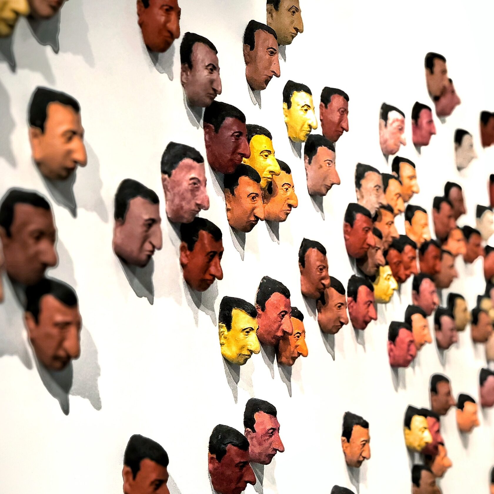
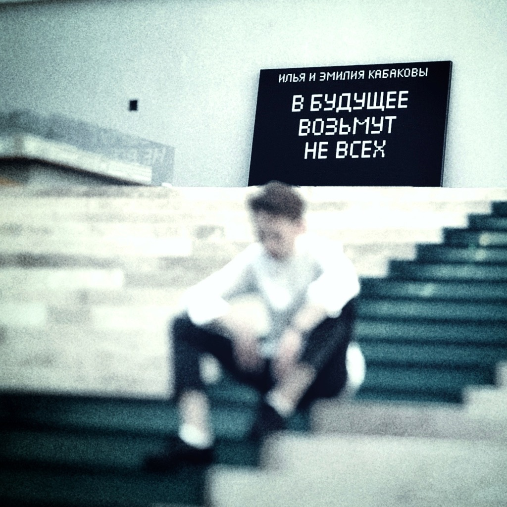

Как сказал американский предприниматель и писатель Майкл Гербер: «Бизнес есть искусство угадывать будущее и извлекать из этого пользу». Искусство же — это ответ на ещё незаданные вопросы, это образ того будущего, которое, как ни странно, есть уже сейчас, но совсем не обязательно будет потом.
Удивительное дело, но во взаимоотношении двух таких важных в человеческой жизни сфер как искусство и бизнес столько глупостей, непонимания и противоречий, что иногда кажется, будто между ними нет ничего общего. Но это самое «кажется» — глубоко ошибочно.
Искусство и бизнес нужны друг другу… как никто… как никогда.
Должен признаться, что мой главный интерес в плане истории — это периоды глобальных культурных трансформаций. А, значит и люди, которые своей энергией, умом и ресурсами позволили этим трансформациям случиться, открыть миру новые грани реальности и новые имена. Когда я в этом ключе думаю о взаимодействии искусства и бизнеса, мне на ум всегда приходит Россия начала 20 века.
Если бы не усилия и поразительное культурное чутье таких людей как Павел Третьяков, Сергей Щукин, Иван Морозов, Савва Мамонтов, Козьма Солдатенков (и многих других российских представителей бизнеса рубежа 19-20 веков) — кто знает, что было бы с Пикассо, Матисом, Сезанном, Ларионовым, Бакстом, Серовым, Врубелем… и в каком мире бы мы жили сейчас?! Тот же Дягилев — своими Русскими Сезонами не только перевернул представление мирового сообщества о русском искусстве, но и вообще, можно сказать, создал весь современный балет. «Птенцы гнезда Дягилева» после его смерти, «разлетевшись» по всему миру, возглавили чуть ли не все ведущие балетные институции Европы и Америки того времени. А художественные приемы и принципы, придуманные им, легли в основу американского кинематографа и мирового шоу-бизнеса.
Значит есть оно, это взаимодействие. И примеры есть, и плоды его очевидны.
Так может просто время сейчас другое? Может всё поменялось, и принципы, и условия, и приоритеты? Может быть. Но мне кажется, дело тут не в этом. Да и время, как известно, всегда “другое”. Я думаю, нам сегодня остро не хватает понимания и уважения… С ОБЕИХ СТОРОН. Как со стороны предпринимателей, так и со стороны художников. Давайте попробуем разобраться.
Зачем искусство предпринимателям?
Представление о том, что искусство — это удобное хранилище красивостей, дизайнерская надстройка над «настоящей жизнью» — катастрофическое заблуждение. Ну знаете, дескать, здорово конечно, это ваше искусство… наверное важная штука, но в моей реальной повседневной жизни, со всеми её задачами и проблемами, никакой роли не играет. Распространенный взгляд? Весьма. Но ведь это взгляд не дальше своего носа.
Александр Перейра (программный директор Ла Скала, который отвечает за спонсоров и экономику; представитель реальной европейской элиты) сказал как-то такую вещь: 90% коммерсантов, заработавших более-менее нормальные деньги дальше просто не пустят (не кто-то конкретно, а просто логика элит)… и не потому, что там заговор какой-то, а потому, что по сути, они больше ничего не умеют и не знают. А в мире больших денег — это важно. Потому, что мир больших денег — это мир не столько денег, сколько больших смыслов и ценностей. Если с тобой не о чем поговорить кроме бизнеса (это маркер!), если ты совсем не разбираешься в живописи, в музыке, в театре, если ты не способен поддержать разговор о современном кинематографе, опере или философии, о технологиях будущего, наконец — значит ты ещё не закончил детский сад и твоё место в яслях. А ещё он сказал: хотите больших свершений, думайте о смысле жизни и культурных ценностях, не забывайте своего Дягилева… открывайте себе горизонт событий заранее.
Как это ни поразительно, но со времён Древней Греции в элитарных кругах не изменилось в этом смысле НИЧЕГО!
Если немного напрячь извилины и подумать, то мы увидим, что искусство бизнесменам нужно чуть ли не больше, чем самим художникам:
- и как пространство смыслов,
- и как область интереса,
- и как инструмент творческого развития,
- и как источник идей,
- и как предвестник будущего,
- и как статусный маркер.
Дело даже не во вхождении в какие-то там элитарные круги, а просто в логике самой реальности и специфике задач бизнеса. Предприниматели порождают идеи, ищут пользу, создают системы и формируют выгоды. Для этого всего им необходимо очень хорошо понимать, в каком мире они живут, как он устроен и что лежит в его основе.


Маурицио Кателлан
Мы, современные люди, живём не столько в так называемой реальности, сколько в мире культуры — в пространстве созданных человеком вещей, идей, форм, образов и понятий, в глобальном поле «воображаемого». Мы тотально погружены в культуру вне зависимости от уровня нашего образования, рода деятельности, возраста и социального статуса. Именно в этом пространстве формируется наше мировоззрение, развёртываясь затем в деятельности и материализуясь в плодах и результатах. А искусство — это своеобразный геном человеческой культуры. Это ключ, обеспечивающий, как говорят программисты, доступ пользователю к непроявленным смыслам и к скрытым функциям системы.
Когда Эйнштейну нужны были неожиданные решения и правильные выводы он садился играть на скрипке или шел в театр. Когда австрийскому магнату Ледереру требовались новые идеи он шёл в мастерскую к своему другу Густаву Климту и часами наблюдал за его работой (ну и за обнаженными натурщицами, конечно).
Чтобы не растекаться мыслью по древу, сформулирую тезисно, что конкретно дает искусство и его изучение современному предпринимателю:
- 1. Позволяет вырваться из оков повседневности и увидеть реальность гораздо полнее, чем из окна своего кабинета.
- 2. Расширяет картину мира. Делает возможным то, что раньше представлялось невозможным. Открывает горизонт событий.
- 3. Развивает вкус, умение видеть и создавать гармонию.
- 4. Развивает творческие способности и навык сильных, нестандартных решений.
- 5. Учит распознавать ценное среди пустого.
- 6. Повышает социальный и культурный статус.
- 7. Открывает возможность внести свою посильную лепту в историю человеческого разума и духа.
Каждый пункт можно обосновать научно и на примерах (я это делаю в книгах и статьях). Но сейчас я бы хотел затронуть и обратный вопрос: зачем художникам предприниматели?
Зачем художникам предприниматели?
Понятно, зачем, скажете вы — чтобы деньги платили. Трудно спорить… но ведь это только часть пазла. Ограничиваясь этим мотивом во взаимодействии с бизнесом, художники очень многое теряют. Вращаясь в кругах и предпринимателей и художников (и принадлежа к обеим сферам), я обратил внимание на один факт: художники в большинстве случаев занимают, по отношению к деловым людям, либо позицию заискивающей зависимости, либо позицию культурного снобизма. А это путь в никуда!
На самом деле, у предпринимателей можно очень многому научиться, а в сотрудничестве с ними выйти на совершенно иной уровень творческой самореализации. Но для этого надо, как минимум, проявить уважение. Уважение к людям, которые способны на то, на что не способен ты сам.
Я это всё к тому, что сегодня, в нашем противоречивом и стремительно меняющемся мире, художники и предприниматели нужны друг другу как воздух. И для такого плодотворного союза нам всем катастрофически не хватает двух вещей: понимания и уважения.


Выставка Ильи Кабакова
Нам всем катастрофически не хватает двух вещей: понимания и уважения.
Я уверен, что очень важно понимать ключевые смысли своей собственной жизни и происходящего вокруг. А смысл — это не набор умных слов в определении. Это, когда нам становится понятно, ЧТО ДЕЛАТЬ И ЗАЧЕМ! Если ты не понимаешь «зачем?», то делать что-то будешь только «из под палки», или вообще не будешь.
Я уверен, что очень важно проявлять уважение. Если у тебя нет уважения к стороне диалога, то никакого сотрудничества не получится. Потому что отсутствие уважения — на сознательном уровне порождает скепсис, а на нейрофизиологическом уровне блокирует восприятие нового.
Не хочу, чтобы транслируемая мной мысль ценности искусства для современного человека выглядела как «местечковое, придыхательное» возвеличивание того, чем занимаюсь я сам. Именно поэтому, всегда стараюсь посмотреть на проблему с разных сторон и найти удачные варианты решения в истории.
Как я уже говорил, в нашей российской истории есть примеры удивительного проявления принципов понимания-уважения, приведших к выдающимся результатам. Феномен Третьякова, Тенишевой, Мамонтова, Щукина — показывает, что этот путь не только возможен, но и исторически оправдан. Сегодняшний день во многом напоминает бурные времена начала прошлого столетия и тем важнее параллели, которые мы пытаемся провести через года и события сложного, но такого притягательного 20 века.
Возможно, ТАМ и ТОГДА скрыто то, что очень нужно нам ЗДЕСЬ и СЕЙЧАС?